Firmware boots, PFS mounts, launcher app renders, no fatal
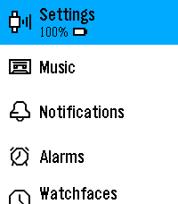
BACK from the boot launcher reveals the running TicToc watchface
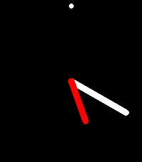
Per-second tick pump: the watchface minute hand moves across a minute boundary
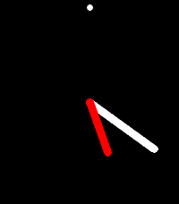
Injected notification pops the real notification_layout card

Popup persists (no auto-exit) 6s after arrival
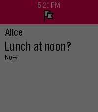
SELECT on the card opens the action menu with Dismiss + Clear All
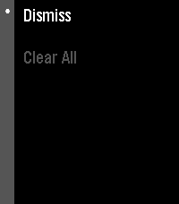
Dismiss pops the card and removes it from history (glance empties)

Clear All wipes history and pops the card
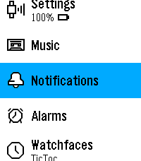
Notifications history app opens
Music inject shows artist/title in the Music app
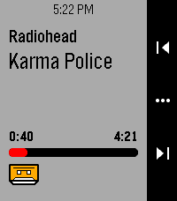
Progress bar/position advance while playing (8s)
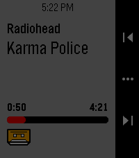
Pausing freezes the position
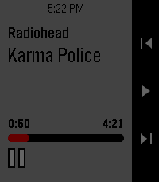
Weather inject updates the launcher Weather glance
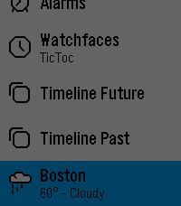
Battery inject updates the Settings glance level
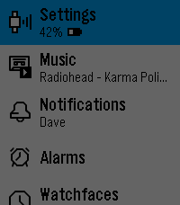
Settings app opens its real submenu tree
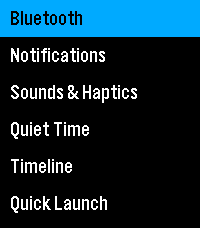
Alarms app opens (first-run Smart Alarm intro or list)
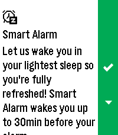
Two injected pins list in Timeline Future
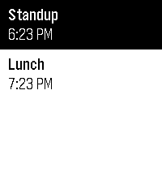
SELECT opens the pin as a real alarm_layout card
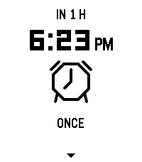
DOWN swipes to the next pin card (SwapLayer)
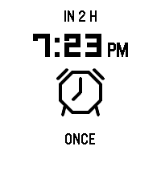
Quiet Time (manual DND) suppresses the popup but keeps history
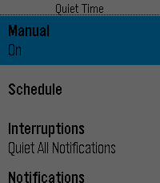
Watchfaces picker switches the running face to Digital
Selected watchface survives a reboot on the same flash
No FATAL / PASSERT across the whole run
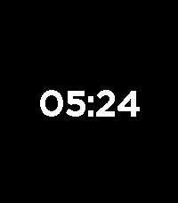